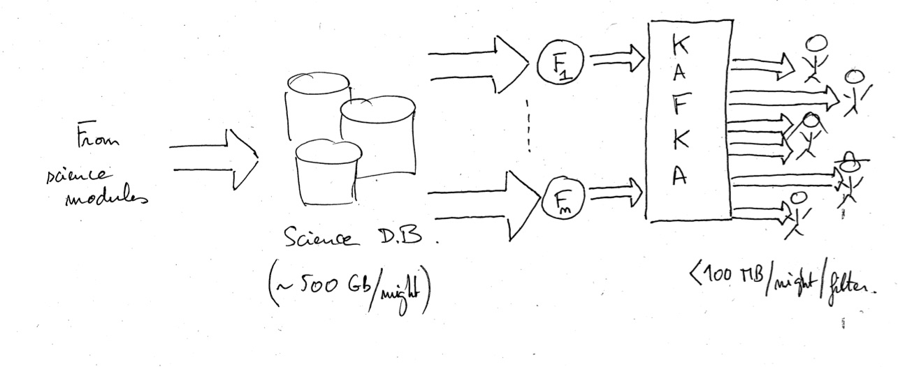

3. Fink filters: how they work?¶
In the previous tutorial, we have seen how to connect to an existing stream generated by a Fink filter. This third tutorial details the Fink filters structure and how to build such a filter to redirect a stream tailored for your science.

3.1. Quality cuts¶
ZTF incoming alert streams contain unfiltered stream of all 5-sigma (only the most obvious artefacts are rejected upstream). Fink has a built-in filter to increase the purity of this incoming stream:
# Alert must satisfy:
mask = nbad.values == 0
mask *= rb.values >= 0.55
mask *= abs(magdiff.values) <= 0.1
Note that ZTF proposes even more aggressive filter criteria to build a pure sample (see here). All alerts enter this particular filter, which is ran automatically for each new alert sent to Fink. Alerts flagged out by this filter do not continue in the science pipelines (but they are kept on disk in case of re-analysis or later processing). For ZTF streams, the yield of this filter fluctuates (up to 50% sometimes), and it often depends on observing condition (weather, etc.).
3.2. Fink filters¶
In Fink, the distribution to users is provided by the broker filtering services. A filter is typically a Python routine that selects which alerts need to be sent based on user-defined criteria. Criteria are based on the alert entries: position, flux, properties, … You can find what is available in ZTF raw alerts here, and Fink added values here.
Let us know about your interest to access particular part of the stream! If you already have a working filter, we would be super happy to make the integration within the broker, otherwise we can design it together. Keep in mind, the criteria for acceptance are:
- The filter works ;-)
- The volume of data to be transferred is tractable on our side.
LSST incoming stream is 10 million alerts per night, or ~1TB/night. Hence your filter must focus on a specific aspect of the stream, to reduce the outgoing volume of alerts. Based on your submission, we will provide estimate of the volume to be transferred.
In the following, we will walk together and see how to build such a filter with an existing example. At first, you are not required to build it, but rather to understand how it works. Once comfortable, it will be your turn to play!
3.3. Fink filters in practice¶
3.3.1. Set up your development environment¶
Fork and clone the fink-filters repository, and create a new folder in fink_filters. The name of the new folder does not matter much, but try to make it meaningful as much as possible! Let’s call it filter_snlike for the sake of this example. This is where we will put our filter.
If you want to be able to test your filter inside the broker, you will need to install it. You have two options:
- Local installation
- Docker installation
3.3.2. Define your filter¶
A filter is typically a Python routine that selects which alerts need to be sent based on user-defined criteria. In this example, let’s imagine you want to receive SN Ia like candidates based on a few criteria. You would create a file called filter.py and define a simple routine:
@pandas_udf(BooleanType(), PandasUDFType.SCALAR)
def snialike(rfscore, cdsxmatch, neargaia, distpsnr1) -> pd.Series:
""" Return alerts considered as SN-Ia like
Parameters
----------
rfscore: Spark DataFrame Column
Column containing the probability to be a SN Ia
from the Random Forest classifier.
cdsxmatch: Spark DataFrame Column
Column containing the cross-match values
neargaia: Spark DataFrame Column
Column containing the distance to closest Gaia object
distpsnr1: Spark DataFrame Column
Column containing the distance to closest PS1 object
Returns
----------
out: pandas.Series of bool
Return a Pandas DataFrame with the appropriate flag:
false for bad alert, and true for good alert.
"""
mask = rfscore.values > 0.0
mask *= cdsxmatch.values == "Unknown"
mask *= neargaia.values > 5.0
mask *= distpsnr1.values > 5.0
return pd.Series(mask)
Remarks:
- Note the use of the decorator is mandatory. It is a decorator for Apache Spark, and it specifies the output type as well as the type of operation. Just copy and paste it for simplicity.
- The name of the routine will be used as the name of the Kafka topic. So once the filter loaded, you would subscribe to the topic
snialiketo receive alerts from this filter. Hence choose a meaningful name! - The name of the input argument must match the name of an alert field (either root or in
candidate). You can also choose Fink added values (usually at the root level), ascdsxmatchwhich is one column added by the xmatch module orrfscorewhich the probability to be a SN Ia returned by the Random Forest classifier. - You can as many input columns as wanted.
Do not forget to include the __init__.py file in your new folder to make it a package.
3.3.3. Test your filter in the broker (only for the brave)¶
Once your filter is written, it is time to test it on mock data! First of all, make sure you installed fink-broker correctly (see above) and fink-filters is in your PYTHONPATH. Edit the bin/distribution.py file to register the path of your filter:
# User-defined topics - python path to the filter
userfilters = [
'fink_filters.filter_snlike.filter.snialike'
]
Then in the conf/fink.conf.distribution configuration file, edit the topic name:
# Kafka topic to publish on as defined by
# the name of your filter
DISTRIBUTION_TOPIC="snialike"
Finally deploy the broker (see the tutorial). Note that when launching the distribution service, you must see the following line at the end of the log:
19/11/28 14:22:10 INFO apply_user_defined_filter (filters.py line 239): new filter/topic registered: rrlyr from fink_filters.filter_snlike.filter
It means your filter is taken into account by the broker! You can estimate the data volume sent by your filter on mock data following the tutorial.
3.3.4. Open a pull request¶
Once your filter is done, we will review it. The criteria for acceptance are:
- The filter works ;-)
- The volume of data to be transferred is tractable on our side.
Keep in mind, LSST incoming stream is 10 million alerts per night, or ~1TB/night. Hence your filter must focus on a specific aspect of the stream, to reduce the outgoing volume of alerts. Based on your submission, we will also provide estimate of the volume to be transferred.
3.3.5. Play!¶
If your filter is accepted, it will be plugged in the broker, and you will be able to receive your alerts in real-time using fink-client (see previous tutorial). Note that we do not keep alerts forever available in the broker. The current retention period is 4 days after alert emission.
3.3.6. Exercise¶
- How the previous filter could be enhanced given other ZTF alert fields?
- Do you have a filter in mind that would serve your scientific needs?